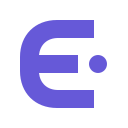

AN OPENING TO MORE
一台电脑，
更多可能。
一个向右敞开的 E，一枚越过边缘的圆点。
从此刻的工作空间，走向下一个可能。
DARK SURFACE
留下清晰的识别
曲线连接三道横向笔画，形成一个敞开的入口。独立圆点象征下一处空间。小尺寸保留完整轮廓，单色同样可辨认。

标记四周至少留出半个圆点直径的空白。字标最小宽度 100 px；小于此宽度只使用标记。不要拉伸、描边、倾斜字标或添加投影。
少量颜色，稳定使用
#6659D8
#C4F0E1
#20212E
ElseportManrope · 650 · 字标以矢量轮廓交付